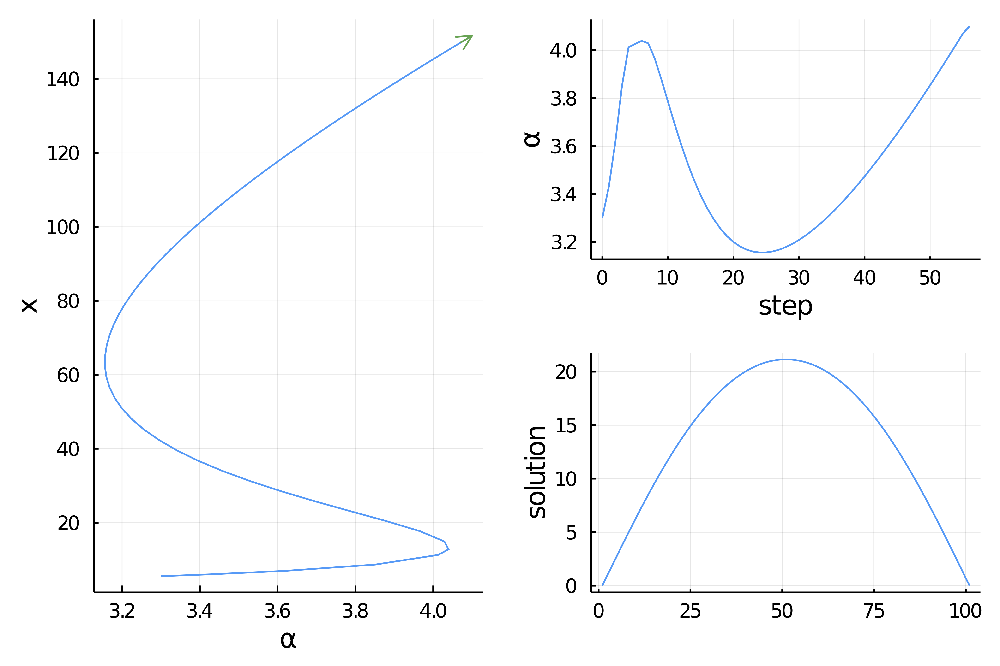

🟡 Temperature model with ApproxFun, no AbstractArray
We reconsider the example Temperature model by relying on the package ApproxFun.jl which allows very precise function approximation. This is an interesting example because we have to change the scalar product of PALC for the method to work well.
This is one example where the state space, the space of solutions to the nonlinear equation, is not a subtype of
AbstractArray. See Required methods for custom arrays for more information.
Code for custom state
We start with some imports:
using ApproxFun, LinearAlgebrausing BifurcationKit, Plotsconst BK = BifurcationKitBK.set_plot_backend!(BK.BK_Plots()) # hideWe then need to add some methods not available in ApproxFun because the state space is not a subtype of AbstractArray:
# specific methods for ApproxFunimport Base: eltype, similar, copyto!, lengthimport LinearAlgebra: mul!, rmul!, axpy!, axpby!, dot, normsimilar(x::ApproxFun.Fun, T) = (copy(x))similar(x::ApproxFun.Fun) = copy(x)mul!(w::ApproxFun.Fun, v::ApproxFun.Fun, α) = (w .= α * v)eltype(x::ApproxFun.Fun) = eltype(x.coefficients)length(x::ApproxFun.Fun) = length(x.coefficients)dot(x::ApproxFun.Fun, y::ApproxFun.Fun) = sum(x * y)axpy!(a, x::ApproxFun.Fun, y::ApproxFun.Fun) = (y .= a * x + y)axpby!(a::Float64, x::ApproxFun.Fun, b::Float64, y::ApproxFun.Fun) = (y .= a * x + b * y)rmul!(y::ApproxFun.Fun, b::Float64) = (y.coefficients .*= b; y)rmul!(y::ApproxFun.Fun, b::Bool) = b == true ? y : (y.coefficients .*= 0; y)copyto!(x::ApproxFun.Fun, y::ApproxFun.Fun) = ( (x.coefficients = copy(y.coefficients);x))Problem formulation
We can easily write our functional with boundary conditions in a convenient manner using ApproxFun:
N(x; a = 0.5, b = 0.01) = 1 + (x + a*x^2)/(1 + b*x^2)dN(x; a = 0.5, b = 0.01) = (1-b*x^2+2*a*x)/(1+b*x^2)^2function F_chan(u, p) (;α, β, Δ) = p return [Fun(u(0.), domain(u)) - β, Fun(u(1.), domain(u)) - β, Δ * u + α * N(u, b = β)]endfunction Jac_chan(u, p) (;α, β, Δ) = p return [Evaluation(u.space, 0.), Evaluation(u.space, 1.), Δ + α * dN(u, b = β)]endWe want to call a Newton solver. We first need an initial guess and the Laplacian operator:
sol = Fun(x -> x * (1-x), Interval(0.0, 1.0))Δ = Derivative(sol.space, 2)# set of parameterspar_af = (α = 3., β = 0.01, Δ = Δ)prob = BifurcationProblem(F_chan, sol, par_af, (@optic _.α); J = Jac_chan, plot_solution = (x, p; kwargs...) -> plot!(x; label = "l = $(length(x))", kwargs...))Finally, we need to provide some parameters for the Newton iterations. This is done by calling
optnewton = NewtonPar(tol = 1e-12, verbose = true)We call the Newton solver:
out = @time BK.solve(prob, Newton(), optnewton, normN = x -> norm(x, Inf64))and you should see
┌─────────────────────────────────────────────────────┐│ Newton step residual linear iterations │├─────────────┬──────────────────────┬────────────────┤│ 0 │ 1.5707e+00 │ 0 ││ 1 │ 1.1546e-01 │ 1 ││ 2 │ 8.0149e-04 │ 1 ││ 3 │ 3.9038e-08 │ 1 ││ 4 │ 7.9049e-13 │ 1 │└─────────────┴──────-───────────────┴────────────────┘ 0.103869 seconds (362.15 k allocations: 14.606 MiB)Continuation
We can also perform numerical continuation with respect to the parameter $\alpha$. Again, we need to provide some parameters for the continuation:
optcont = ContinuationPar(dsmin = 0.0001, dsmax = 0.05, ds= 0.005, p_max = 4.1, plot_every_step = 10, newton_options = NewtonPar(tol = 1e-8, max_iterations = 20, verbose = true), detect_bifurcation = 0, max_steps = 200)Then, we can call the continuation routine.
# we need a specific bordered linear solver# we use the BorderingBLS one to rely on ApproxFun.\br = continuation(prob, PALC(bls = BorderingBLS(solver = optnewton.linsolver, check_precision = false)), optcont, plot = true, plot_solution = (x, p; kwargs...) -> plot!(x; label = "l = $(length(x))", kwargs...), verbosity = 2, normC = x -> norm(x, Inf64))and you should see

However, if we do that, we'll see that it does not converge very well. The reason is that the default arc-length constraint (see Pseudo arclength continuation) is
\[N(x, p)=\frac{\theta}{\text { length}(x)}\left\langle x-x_{0}, d x_{0}\right\rangle+(1-\theta) \cdot\left(p-p_{0}\right) \cdot d p_{0}-d s=0\]
is tailored for vectors of fixed length. The $\frac{1}{length(x)}$ is added to properly balance the terms in the constraint. Thus, in BifurcationKit, the dot product is in fact (x,y) -> dot(x,y) / length(y).
But here, the vector space is provided with a custom dot product (see above) which depends on the domain, here Interval(0.0, 1.0). Hence, we want to change this constraint $N$ for the following:
\[N(x, p)={\theta}\left\langle x-x_{0}, d x_{0}\right\rangle+(1-\theta) \cdot\left(p-p_{0}\right) \cdot d p_{0}-d s=0.\]
This can be done as follows:
optcont = ContinuationPar(dsmin = 0.001, dsmax = 0.05, ds= 0.01, p_max = 4.1, plot_every_step = 10, newton_options = NewtonPar(tol = 1e-8, maxIter = 20, verbose = true), max_steps = 300, θ = 0.2, detect_bifurcation = 0)br = continuation(prob, PALC(bls=BorderingBLS(solver = optnewton.linsolver, check_precision = false)), optcont, plot = true, # specify the dot product used in PALC dotPALC = BK.DotTheta(dot), # we need a specific bordered linear solver # we use the BorderingBLS one to rely on ApproxFun.\ linear_algo = BorderingBLS(solver = DefaultLS(), check_precision = false), plot_solution = (x, p; kwargs...) -> plot!(x; label = "l = $(length(x))", kwargs...), verbosity = 2, normC = x -> norm(x, Inf64))